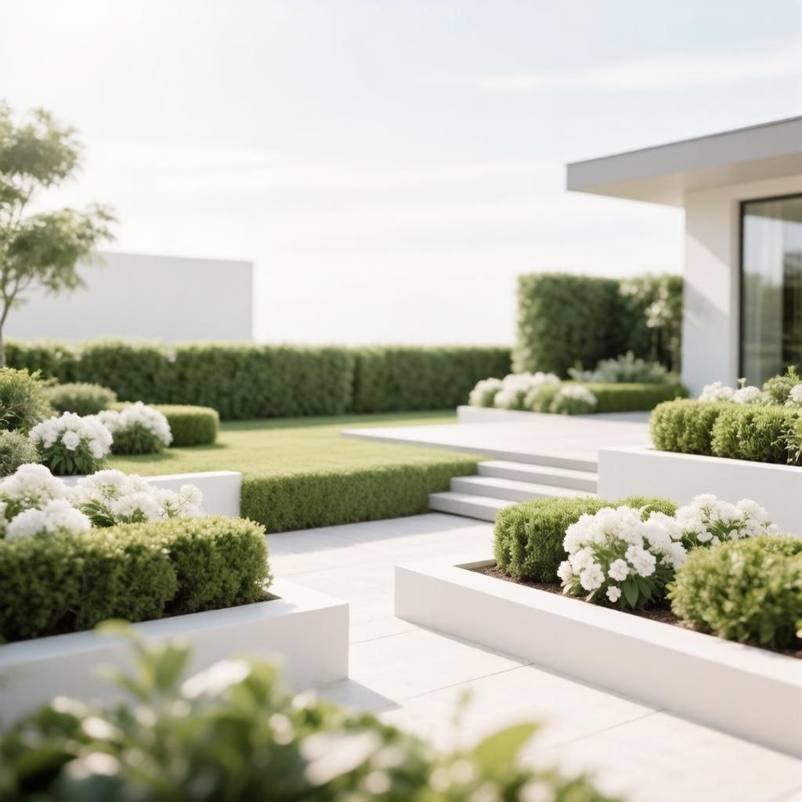
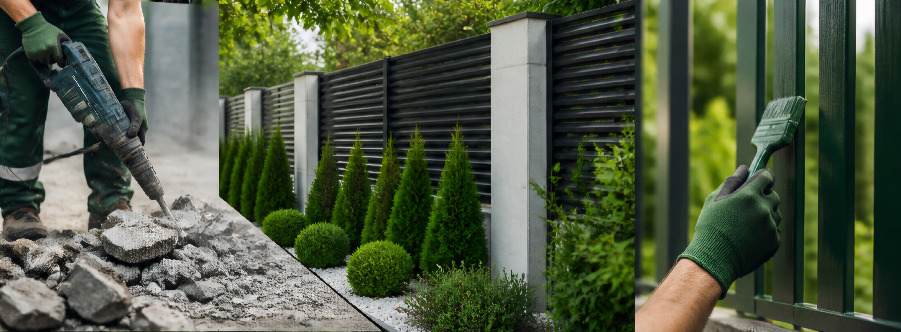
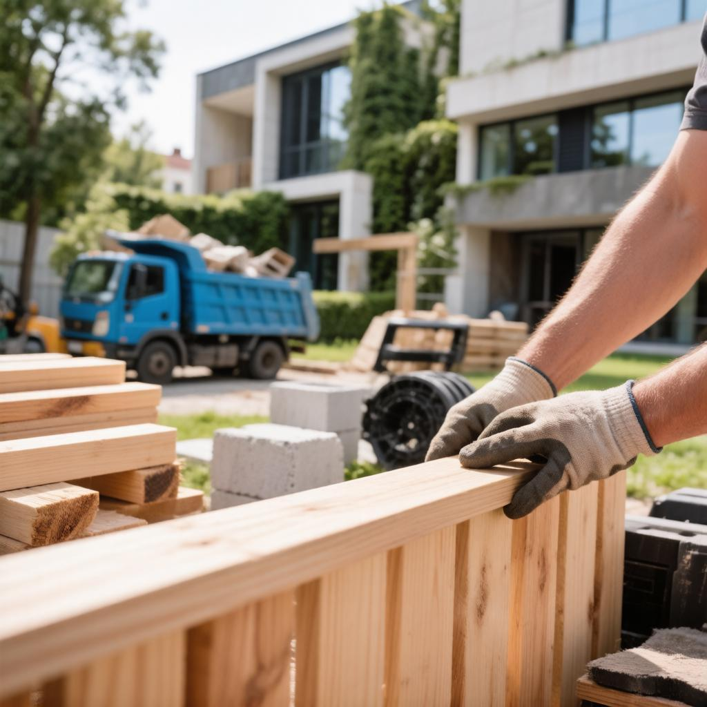
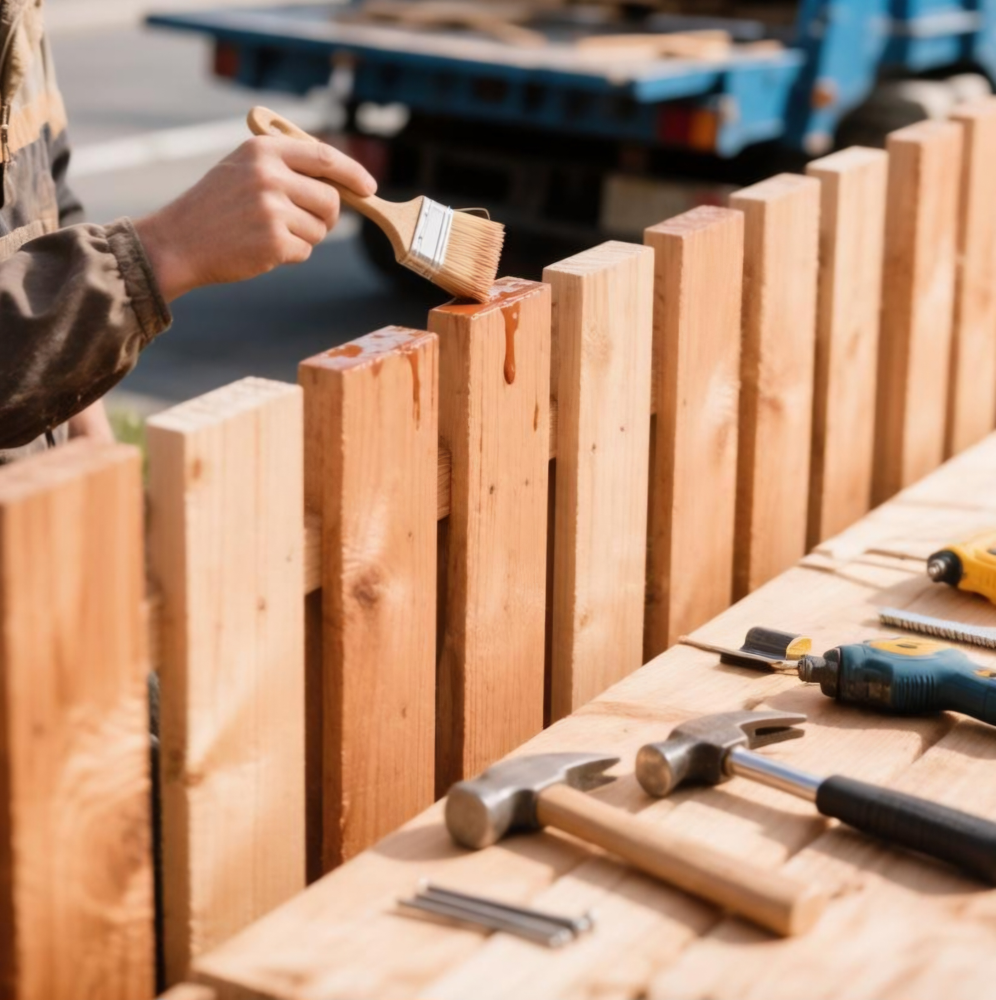
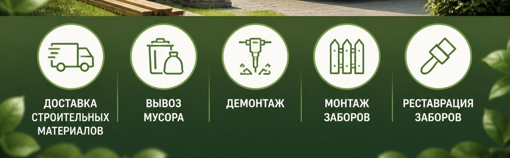

Доставка
материалов
Песок, щебень, ПГС и другие материалы для стройки и благоустройства участка.
Оставить заявку →Комплексная очистка, вывоз мусора и благоустройство участков
Вывоз строительного мусора с сортировкой, демонтаж старых ограждений и комплексное благоустройство территорий Красноярска и прилегающих муниципальных районов.
Оставить заявку →01 Экологичная
сортировка
02 Чёткий расчёт
до начала работ
03 Порядок после
каждой задачи


Что мы делаем
Организуем очистку, вывоз и благоустройство так, чтобы участок снова стал полезным и удобным.
Песок, щебень, ПГС и другие материалы для стройки и благоустройства участка.
Оставить заявку →
Освобождаем участок от строительных и крупногабаритных отходов.
Оставить заявку →
.jpeg)
Монтаж, замена и восстановление ограждений после очистки участка.
Оставить заявку →О компании
Специализируемся на экологическом сборе и вывозе отходов с организацией полного цикла: от бережного демонтажа конструкций до финального благоустройства территории.
Оставить заявку →
Наши работы
.jpeg?v=works-original-2)
Экологичная утилизация материалов
.jpeg?v=works-original-2)
Подготовка основания, установка ограждений и облагораживание территории

Песок, щебень и другие материалы
Как работаем
Сразу договариваемся о задаче, сроках и стоимости. Вы знаете, что будет происходить на каждом этапе.
Описываете задачу через форму на сайте.
Уточняем объём, доступ к участку, порядок сортировки и удобное время.
Вывозим, сортируем, утилизируем и оставляем участок в порядке.
Нужна помощь?
Пришлите фото участка или коротко опишите задачу. Подскажем решение и рассчитаем стоимость.
Раскрытие информации по ФЗ-209
Настоящие сведения публикуются в соответствии со статьёй 14 Федерального закона от 24.07.2007 № 209-ФЗ «О развитии малого и среднего предпринимательства в Российской Федерации».
Субъект предпринимательской деятельности: Индивидуальный предприниматель Поташева Мария Михайловна
ОГРНИП: 326246800133064
ИНН: 246007518410
Дата государственной регистрации: 18.08.2026 г.
Основной вид деятельности: 38.11 Сбор неопасных отходов
Налоговый режим: специальный налоговый режим «Налог на профессиональный доход» (НПД) в соответствии с Федеральным законом от 27.11.2018 № 422-ФЗ.
По состоянию на IV квартал 2026 года.
Численность работников: 0 человек. Наёмные работники по трудовым договорам в штате отсутствуют. Деятельность осуществляется предпринимателем лично с правом привлечения третьих лиц, включая самозанятых, по гражданско-правовым договорам подряда и возмездного оказания услуг.
Доходы от реализации за 2025 год: 0,00 рублей. Хозяйственная деятельность в 2025 году не велась в связи с регистрацией субъекта в текущем налоговом периоде.
Чистая прибыль за 2025 год: 0,00 рублей.
Инвестиции в основной капитал: в рамках реализации текущего инвестиционного проекта по развитию инфраструктуры сбора неопасных отходов на территории Красноярского края предприятием привлечён собственный капитал. Доля софинансирования целевых расходов за счёт собственных средств составляет не менее 25% от общего объёма финансирования проекта.